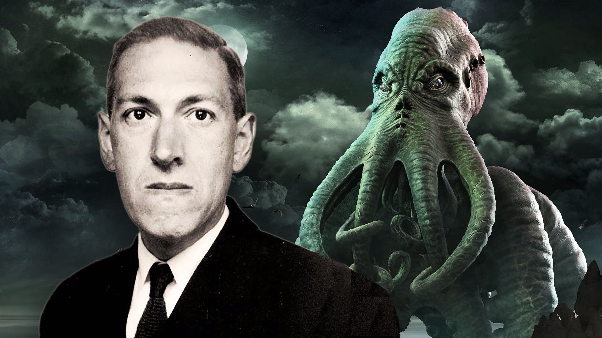

Alex Mirez

Escritor venezolano, nacido el 16 de octubre de 1994 en Caracas.Se graduó en servicios turísticos, aunque se dedicó únicamente a la escritura.
Gracias a los cuentos de su abuelo, a Alex Mires le encantaba leer desde muy pequeño.
Poco a poco, este interés se extendió también a la escritura, que comenzó a explorar gracias al descubrimiento de la plataforma Wattpad.
Allí comenzó a subir sus historias que inesperadamente atrajeron a su gran número de lectores, 2017 vio la publicación de Asfixia, su primera novela publicada en colaboración con una editorial tradicional.
Tres años más tarde, aparecería en la primera novela de suspenso para adultos jóvenes "Perfect Lie".
Algunos de los libros que ha publicado son los siguientes:
- Strange
- Perfecto mentiroso
- Peligrosos y verdades
- Damián
- Asfixia
Gracias a los cuentos de su abuelo, a Alex Mires le encantaba leer desde muy pequeño.
Poco a poco, este interés se extendió también a la escritura, que comenzó a explorar gracias al descubrimiento de la plataforma Wattpad.
Allí comenzó a subir sus historias que inesperadamente atrajeron a su gran número de lectores, 2017 vio la publicación de Asfixia, su primera novela publicada en colaboración con una editorial tradicional.
Tres años más tarde, aparecería en la primera novela de suspenso para adultos jóvenes "Perfect Lie".
Algunos de los libros que ha publicado son los siguientes:
Ariana Gordoy

Ariana Godoy, escritora venezolana radicada en Carolina del Norte, ha sido una apasionada de la lectura desde pequeña. Su interés por la escritura provino de la lectura. Llevaba un diario todos los días, y con el tiempo se le hizo muy corto, por lo que comenzó a agregar criaturas fantásticas y escenarios imaginarios que formaron sus primeros relatos. Mientras estaba en la universidad, Godoy decidió publicar sus escritos en la plataforma Wattpad. Desde su creación ha subido más de 20 historias y ha sido leído por más de 745.000 personas. El éxito de su trabajo atrajo la atención de los editores tradicionales que finalmente publicaron su obra.
Entre sus obras literarias, puedes encontrar novelas como "Mi amor", "A través de mi ventana" y "El Heist".
Algunos de los libros que ha publicado son los siguientes:
- Heist
- fleur
- A través de ti
- A través de mi ventana
- Sigue mi voz
Algunos de los libros que ha publicado son los siguientes:
Angel David Revilla

Es un, youtuber y periodista que nació el 16 de Julio de 1982, en la ciudad de Caracas, en Venezuela. Es más bien reconocido por su trabajo en YouTube con su canal Dross Rotzank y sus novelas Luna de Plutón y El Festival de la Blasfemia.
Después de ganar una inmensa popularidad en la comunidad de YouTube, Ángel David Revilla decidió retomar su carrera como escritor, no en su blog, sino en el campo de la literatura.
En 2014, había publicado su primera novela, Luna de Plutón, editada por Grupo Planeta, que fue un éxito en América Latina. Tras el éxito de la novela, publicó otra obra literaria "Festival de las Blasfemias" con un toque de humor y terror al mismo tiempo.
El éxito de Ángel David con el contenido multimedia se trasladó a la escritura, y en 2017 lanzó una secuela de Luna de Plutón titulada La Guerra de Ysaak. A partir de ahí, Ángel David lanzó su primer esfuerzo de terror en 2018, agregando contenido a YouTube: El Valle de la Calma.
Tras éxitos sucesivos, Ángel David ha iniciado en 2019 otra nueva obra de terror denominada "El libro negro", "La historia de terror".
Algunos de los libros que ha publicado son los siguientes:
- Escape
- El libro Negro
- Luna de Pluton
- Valle de la Calma
- Festival de las blasfemia
Después de ganar una inmensa popularidad en la comunidad de YouTube, Ángel David Revilla decidió retomar su carrera como escritor, no en su blog, sino en el campo de la literatura. En 2014, había publicado su primera novela, Luna de Plutón, editada por Grupo Planeta, que fue un éxito en América Latina. Tras el éxito de la novela, publicó otra obra literaria "Festival de las Blasfemias" con un toque de humor y terror al mismo tiempo. El éxito de Ángel David con el contenido multimedia se trasladó a la escritura, y en 2017 lanzó una secuela de Luna de Plutón titulada La Guerra de Ysaak. A partir de ahí, Ángel David lanzó su primer esfuerzo de terror en 2018, agregando contenido a YouTube: El Valle de la Calma. Tras éxitos sucesivos, Ángel David ha iniciado en 2019 otra nueva obra de terror denominada "El libro negro", "La historia de terror".
Algunos de los libros que ha publicado son los siguientes:
Stephen King
El escritor estadounidense de terror Stephen King, también conocido como Richard Bachman, nació en Portland el 21 de septiembre de 1947.
Apenas vivía con su padre porque dejó a la familia a los dos años y se
convirtió en madre para criarlo a él y a su hermano. De niño, tuvo un trágico accidente: su amigo quedó atrapado en las vías y lo atropelló.
A pesar de las sospechas de que este incidente inspiró su propio trabajo, el autor descartó la idea, alegando que su amor por el género se debía más a la lectura de la colección de novelas y libros de terror de una tía.
King es el autor de novelas de terror muy populares, muchas de las cuales se han convertido en películas de gran éxito.Su primera novela fue Carrie de 1974, sobre una mujer joven con superpoderes.
En un principio el autor abandonó la historia, pero gracias a su esposa la revivió y la publicó como uno de sus grandes logros posteriores para ser llevada a la gran pantalla.
Desde entonces, se han expuesto varias obras, como "El misterio de Salem's Lot" (1975), "El resplandor" (1977), "La zona muerta" (1979), "Cujo" (1981), "Cementerio de animales" ( 1983), It (1986), Misery (1987), La cúpula (2009), Doctor sueño (2013) o Revival (2013), varias de las cuales también fueron filmadas
Algunos de los libros que ha publicado son los siguientes:
- It
- La niebla
- Cementerio de animales
- The Stand
- El resplandor
A pesar de las sospechas de que este incidente inspiró su propio trabajo, el autor descartó la idea, alegando que su amor por el género se debía más a la lectura de la colección de novelas y libros de terror de una tía.
King es el autor de novelas de terror muy populares, muchas de las cuales se han convertido en películas de gran éxito.Su primera novela fue Carrie de 1974, sobre una mujer joven con superpoderes. En un principio el autor abandonó la historia, pero gracias a su esposa la revivió y la publicó como uno de sus grandes logros posteriores para ser llevada a la gran pantalla.
Desde entonces, se han expuesto varias obras, como "El misterio de Salem's Lot" (1975), "El resplandor" (1977), "La zona muerta" (1979), "Cujo" (1981), "Cementerio de animales" ( 1983), It (1986), Misery (1987), La cúpula (2009), Doctor sueño (2013) o Revival (2013), varias de las cuales también fueron filmadas
Algunos de los libros que ha publicado son los siguientes:
Lovecraft

Lovecraft desarrolló su propia mitología dentro del género de terror, siguiendo una corriente de terror cósmico materialista muy alejada de los aspectos tradicionales del género.
Sin embargo, fue relativamente desconocido en vida y se dio a conocer solo después de su muerte, cuando sus obras fueron distribuidas por amigos y conocidos.
Rápidamente se interesó por la mitología árabe y luego griega, escribiendo cuentos y poemas inspirados en ellos desde una edad temprana.
Su abuelo, quien fue responsable de su educación después de la muerte de su padre, lo introdujo en las historias de terror gótico.
Caracterizado por el pesimismo y el cinismo, su trabajo generalmente se divide en tres períodos: el período de la historia de terror (1905-1920), el período de los sueños (1920-1927) y el período de la mitología de Cthulhu (1925-1935).
Sus temas más frecuentes son el conocimiento tabú, la influencia de los no humanos sobre los humanos, la culpa innata (la creencia de que los errores de los antepasados no se pueden evitar), el destino, la idea de que los humanos están constantemente amenazados y en peligro,
la raza, el género y la ciencia. . típicamente. en riesgo público.
Algunos de los libros que ha publicado son los siguientes:
- La llamada de Cthulhu
- El color surgido del espacio
- La Montaña de la locura
- sueños en la casa de las bruja
- Ratas tras las paredes
Su abuelo, quien fue responsable de su educación después de la muerte de su padre, lo introdujo en las historias de terror gótico. Caracterizado por el pesimismo y el cinismo, su trabajo generalmente se divide en tres períodos: el período de la historia de terror (1905-1920), el período de los sueños (1920-1927) y el período de la mitología de Cthulhu (1925-1935).
Sus temas más frecuentes son el conocimiento tabú, la influencia de los no humanos sobre los humanos, la culpa innata (la creencia de que los errores de los antepasados no se pueden evitar), el destino, la idea de que los humanos están constantemente amenazados y en peligro, la raza, el género y la ciencia. . típicamente. en riesgo público.
Algunos de los libros que ha publicado son los siguientes:
Andrea Paredez Ramos

Escritora mexicana de terror y ero-guro. Autora de El burdel de las parafilias, Sadie y numerosos relatos cortos
Algunos de los libros que ha publicado son los siguientes:
- El burdel de las parafilias
- Loteria del Caos
- Sadie
Algunos de los libros que ha publicado son los siguientes:
R.L.Stine
Escritor estadounidense, nacido el 8 de octubre de 1943 en Columbus, Ohio.
Después de graduarse de la Universidad Estatal de Ohio en 1968, se mudó a Nueva York y comenzó a publicar libros humorísticos para niños.
En la década de 1980 publicó su primera novela de terror, Cita a ciegas (1986), género en el que se especializó durante los años siguientes.
Sus novelas suelen estar escritas por niños o adolescentes, muchas de las cuales se recogen en la serie Piel de gallina (publicada como Pesadillas en España y Escalofríos en otros países de habla hispana), compuesta por 62 novelas publicadas entre 1992 y 1997 y adaptadas a serie de televisión.
La serie de novelas del mismo nombre fue un gran éxito. Sus otras series principales de novelas son Rotten School, Mostly Ghosts, The Nightmare Room y Fear Street. Su género literario, que se centra en el terror adolescente y preadolescente, le ha llevado a ser considerado el Stephen King de la literatura juvenil.
Algunos de los libros que ha publicado son los siguientes:
- Chantaje mortal
- La noche del muñeco viviente
- Sangre de mostruo
- Sonríe y muérete
- La Mascara Maldita
Sus novelas suelen estar escritas por niños o adolescentes, muchas de las cuales se recogen en la serie Piel de gallina (publicada como Pesadillas en España y Escalofríos en otros países de habla hispana), compuesta por 62 novelas publicadas entre 1992 y 1997 y adaptadas a serie de televisión.
La serie de novelas del mismo nombre fue un gran éxito. Sus otras series principales de novelas son Rotten School, Mostly Ghosts, The Nightmare Room y Fear Street. Su género literario, que se centra en el terror adolescente y preadolescente, le ha llevado a ser considerado el Stephen King de la literatura juvenil.
Algunos de los libros que ha publicado son los siguientes: